An interactive explainer
VQ-VAE: Neural Discrete Representation Learning
Ask a variational autoencoder for a continuous latent code and you get one for free — the reparameterization trick makes it differentiable, and gradient descent does the rest. Ask for a discrete one — a symbol, an index into a finite dictionary — and you hit a wall: `argmin` and `argmax` have no useful gradient at all. VQ-VAE's answer is almost embarrassingly direct — just copy the gradient across the lookup as if it weren't there — and it works well enough to learn, with zero supervision, a discrete code for speech that lines up with real phonemes 49.3% of the time against a 7.2% chance baseline, compress a 128×128 ImageNet photo by 42.6× before handing it to a prior, and dodge the "posterior collapse" that breaks continuous VAEs paired with strong decoders — without even trying to.
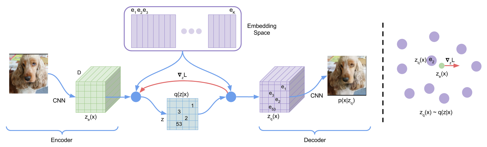
Language is discrete. Speech is a sequence of phonemes, not a continuous blur. Most of what a scene "is" about — the objects in it — occupies a handful of symbolic slots, not a smooth manifold of pixel values. And yet almost every deep generative model in 2017 represented its latent space as continuous, because continuous spaces are what backpropagation is built for. VQ-VAE is DeepMind's answer to a specific, practical question: can you build a VAE whose latent code is genuinely discrete — an index into a learned dictionary — and still train it end-to-end with plain gradient descent?
The honest answer, and the reason this paper is worth reading closely three modalities and one very simple trick later, is: yes, almost accidentally easily, provided you're willing to lie to the optimizer about where the gradient came from.
1. The problem: discrete gradients and posterior collapse
A standard VAE encodes $\vx$ into a distribution $q(\vz|\vx)$, decodes a sample back into $p(\vx|\vz)$, and trains both jointly by backpropagating through a sampling step — made possible by the reparameterization trick, which only works because the posterior is continuous (usually Gaussian). Swap in a discrete categorical posterior and that trick breaks: sampling from a categorical distribution, or taking an $\arg\min$/$\arg\max$, has zero useful gradient. This is the reason discrete latent variables had, up to this point, proven so hard to train in deep networks.
There's a second, subtler problem VQ-VAE sidesteps almost as a side effect. Pair a VAE with a sufficiently powerful decoder — a PixelCNN, say — and the decoder can often model $p(x)$ well enough on its own that it simply ignores the latent code entirely. This is posterior collapse: the KL term in the ELBO pushes $q(\vz|\vx)$ toward the prior, the decoder doesn't need $\vz$ to reconstruct well, and the latents end up carrying no information at all — precisely the failure mode you'd worry about most when pairing a VAE with an autoregressive PixelCNN decoder, which is exactly the setup this paper wants to use.
2. The trick: vector quantization
VQ-VAE replaces the usual Gaussian posterior with something much simpler. Define an embedding table $\ve \in \mathbb{R}^{K\times D}$ — $K$ vectors, each of dimension $D$, the model's entire "vocabulary." The encoder maps $\vx$ to a continuous vector $z_e(\vx)$, exactly like a normal autoencoder. Then, instead of sampling, the model just looks up the nearest codebook vector:
$$ z_q(\vx) = \ve_k, \qquad k = \arg\min_j \| z_e(\vx) - \ve_j \|_2 $$
and the posterior is deterministic and one-hot: probability 1 on whichever $k$ minimizes that distance, zero everywhere else. With a uniform categorical prior over the $K$ codes, the ELBO's KL term collapses to the constant $\log K$ — it drops out of the training objective entirely. $z_q(\vx)$, not the raw encoder output, is what actually gets passed to the decoder.
Drag the widget below to feel what this operation actually does: the encoder output can be anywhere in a continuous space, but the decoder only ever sees one of $K$ fixed points.
3. Learning through a lookup table
Here's the actual problem: $\arg\min$ is piecewise-constant. Nudge $z_e(\vx)$ a tiny amount and, almost everywhere, $z_q(\vx)$ doesn't move at all — it's stuck on the same codebook vector until the nudge is large enough to cross a Voronoi boundary. The true gradient of the reconstruction loss with respect to $z_e(\vx)$, routed through this operation, is zero almost everywhere and undefined at the boundaries. If you used it literally, the encoder would never receive a training signal.
VQ-VAE's fix, borrowed from Bengio et al.'s straight-through estimator for other discrete operations: during the forward pass, use $z_q(\vx)$; during the backward pass, pretend the whole quantization step was the identity function, and copy the gradient $\nabla_z L$ computed at $z_q(\vx)$ straight back to $z_e(\vx)$, unaltered. It's not the true gradient of anything — it's a deliberate approximation. But because $z_e(\vx)$ and $z_q(\vx)$ live in the exact same $D$-dimensional space, that borrowed gradient still points in a locally sensible direction: "move your output this way and the reconstruction gets better," which is precisely the information the encoder needs, even filtered through the wrong codebook vector.
This is exactly what the manim animation and the widget above are both showing: the encoder output drifts, occasionally crossing into a different codebook vector's territory, and every step the same borrowed gradient is what's pushing it.
The encoder output drifts through the embedding space, its nearest codebook vector changing discontinuously as it crosses Voronoi boundaries — while the same straight-through gradient keeps getting copied back from whichever code it currently lands on.
4. Three loss terms, three jobs
The straight-through trick has a direct consequence: because the gradient skips over $z_q(\vx)$ entirely, the codebook vectors $\ve_i$ receive no gradient from the reconstruction loss at all. Something else has to train them. VQ-VAE's full objective has three terms, each updating a different, disjoint subset of the model's parameters:
$$ L = \underbrace{\log p(\vx \mid z_q(\vx))}_{\text{reconstruction}} + \underbrace{\|\sg[z_e(\vx)] - \ve\|_2^2}_{\text{codebook}} + \beta\underbrace{\|z_e(\vx) - \sg[\ve]\|_2^2}_{\text{commitment}} $$
where $\sg[\cdot]$ is the stop-gradient operator — identity on the forward pass, zero gradient on the backward pass. The reconstruction term trains the decoder outright, and the encoder via the straight-through path. The codebook term is a plain $\ell_2$ pull that moves each $\ve_i$ toward the encoder outputs currently assigned to it — a form of online dictionary learning (it's literally the loss $k$-means minimizes) — with the stop-gradient on $z_e(\vx)$ making sure this term never touches the encoder. The commitment term pulls the other way: it keeps the encoder from drifting arbitrarily far from its assigned code (nothing in the setup otherwise bounds how large $z_e(\vx)$ can grow, since the embedding space has no fixed scale), weighted by $\beta$ — the paper reports results are stable for $\beta$ anywhere from 0.1 to 2.0, and uses $\beta=0.25$ throughout.
5. Learning the codebook: VQ loss vs. EMA
The codebook loss above is one way to train $\ve$ — plain gradient descent on an $\ell_2$ pull. But the paper points out its own loss term is really approximating the closed-form optimum of a $k$-means-style objective: if $\{z_{i,1},\ldots,z_{i,n_i}\}$ are the encoder outputs currently assigned to code $i$, the value of $\ve_i$ that minimizes their squared distance is simply their mean. You can't compute that exactly online — minibatches only ever see a slice of the assignments — so the appendix proposes tracking it with an exponential moving average instead:
$$ N_i^{(t)} = \gamma N_i^{(t-1)} + (1-\gamma)\,n_i^{(t)}, \qquad m_i^{(t)} = \gamma m_i^{(t-1)} + (1-\gamma)\sum_j z^{(t)}_{i,j}, \qquad \ve_i^{(t)} = \frac{m_i^{(t)}}{N_i^{(t)}} $$
with $\gamma=0.99$ reported to work well. This EMA update wasn't used for the experiments in the paper itself (it's presented in the appendix as an alternative), but it became the standard way essentially every later VQ-VAE-style model trains its codebook — it removes one gradient-based loss term entirely and tends to be more stable in practice. The widget below runs the exact update rule above.
6. The compression math
Every discrete code is a fixed, countable amount of information: $\log_2 K$ bits per latent, times however many latents you use. For the paper's headline ImageNet experiment — a $128\times128\times3$ image (8 bits per channel) encoded to a $32\times32\times1$ grid of codes with $K=512$ — that's $\frac{128\cdot128\cdot3\cdot8}{32\cdot32\cdot\log_2 512} \approx 42.6\times$ smaller than the raw pixels, before a prior model ever gets involved. That reduction isn't just a storage trick — it's what makes it practical to fit a powerful autoregressive prior (a PixelCNN) over the latent grid instead of over raw pixels, both speeding up training/sampling and letting the prior spend its capacity on global structure instead of low-level pixel statistics.
7. Results: images, audio, and video
Images
On CIFAR-10, with matched architectures, a continuous VAE reaches 4.51 bits/dim, VQ-VAE reaches 4.67 bits/dim, and VIMCO (a discrete-latent baseline with an independent categorical prior) trails at 5.14 bits/dim — the paper's own framing is that VQ-VAE is the first discrete-latent model to seriously challenge continuous VAEs on likelihood, closing nearly all of the gap that previous discrete approaches left open.
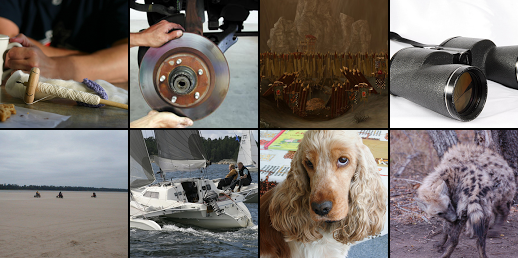
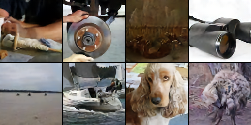
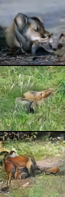
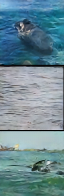
A more extreme test: compress an 84×84 DeepMind Lab frame down to just three latent codes (27 bits total, less than a single float32) with a second-stage VQ-VAE stacked on the first. This is exactly the regime where a VAE with a powerful PixelCNN decoder is expected to suffer posterior collapse — the decoder is powerful enough to ignore three symbols entirely and still produce plausible-looking rooms. It doesn't:
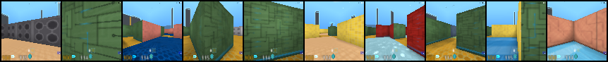
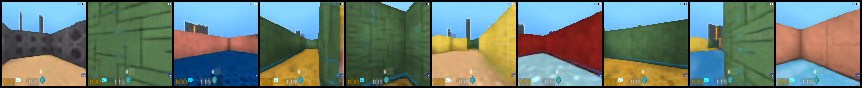
Audio
On VCTK (109 speakers), an encoder with 6 strided convolutions compresses raw audio 64×, down to a single 512-way discrete stream, with the decoder additionally conditioned on a one-hot speaker ID. Reconstructions preserve the spoken content but not the exact waveform or prosody — evidence the discrete code is capturing what was said, invariant to low-level acoustic detail, entirely without linguistic supervision.
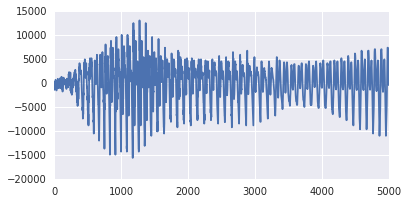
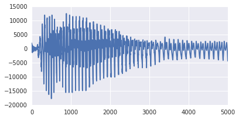
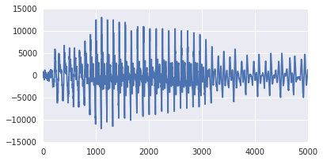
The sharpest number in the paper: on a 460-speaker dataset with 128× compression, the model's 128 possible discrete codes were matched one-to-one against ground-truth phonemes never used in training. The best single-code-to-phoneme mapping reached 49.3% classification accuracy on a 41-way phoneme task, against a 7.2% most-likely-class baseline — unsupervised codes discovering a rough phoneme-level structure of language, purely from the statistics of raw sound.
Video
Trained on DeepMind Lab frames with an action-conditioned prior, VQ-VAE can "imagine" forward: generate an entire sequence of future latents autoregressively, conditioned only on a stream of actions, and decode to pixels only at the very end — no frame is ever generated except the last, and no intermediate pixel-space rollout happens at all.
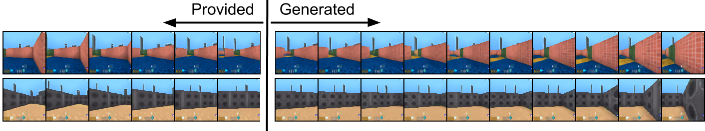
| Setting | Metric | VQ-VAE | Comparison |
|---|---|---|---|
| CIFAR-10 likelihood | bits/dim (↓) | 4.67 | 4.51 (continuous VAE) |
| bits/dim (↓) | 4.67 | 5.14 (VIMCO, discrete) | |
| bits/dim (↓) | 4.67 | 4.54 (Deep Conv VAE) | |
| ImageNet 128×128×3 | compression ratio | 42.6× | 32×32×1 grid, K=512 |
| Speech (LibriSpeech, 460 spk.) | phoneme classification acc. | 49.3% | 7.2% (chance baseline) |
| Speech (VCTK, 109 spk.) | waveform compression | 64× | + zero-shot speaker conversion |
All likelihoods are lower bounds. Full audio samples: the authors' companion page, linked from the paper.
8. Why this works
Three separate design choices reinforce each other here, and it's worth being clear about why none of them is optional.
The deterministic posterior kills the KL term, which kills posterior collapse
Posterior collapse happens when the KL-to-prior term in the ELBO can be minimized by making the posterior match the prior — i.e., by having the encoder output carry no information. Once the posterior is a deterministic one-hot argmin and the prior is uniform, the KL term is the fixed constant $\log K$, full stop. There's no way to "cheat" toward the prior, because the model was never rewarded for approaching it in the first place.
Sharing the embedding space makes the borrowed gradient meaningful
The straight-through estimator is a hack in general — copying a gradient across an arbitrary non-differentiable operation can easily point in a useless or actively harmful direction. It works here specifically because $z_e(\vx)$ and $z_q(\vx)$ are guaranteed to live in the same $D$-dimensional vector space by construction. The gradient computed "as if $z_q(\vx)$ could move freely" is, to first order, still approximately correct for $z_e(\vx)$, precisely because they're never far apart (the commitment loss makes sure of that).
Separating "what trains what" avoids the usual VAE failure modes
Because the three loss terms train disjoint parameter sets with no gradient interference between them, none of the usual VAE balancing acts (tuning a KL weight against a reconstruction weight to avoid collapse or blurry samples) apply in the same way. The one hyperparameter that remains, $\beta$, only controls how tightly the encoder commits to its codes — and the paper reports the results are largely insensitive to it.
9. What it means
VQ-VAE's real legacy isn't the CIFAR-10 bits/dim number — it's the two-stage recipe it establishes and that an enormous amount of later generative modeling work adopts wholesale: first learn a discrete tokenizer (compress raw data to a grid of codebook indices), then train a separate, powerful autoregressive or diffusion prior over those tokens instead of over raw pixels or audio samples. VQGAN adds an adversarial and perceptual loss on top of the same quantization mechanism; DALL·E's original image tokenizer is a close cousin; the pattern of "discretize first, model the discrete tokens second" now underlies a large fraction of image, audio, and video generation pipelines that came after this paper.
Open problems the paper names itself
- The prior is trained after, not jointly with, the VQ-VAE. The paper explicitly flags joint training of the prior and the encoder/decoder as future work that "could strengthen results" — something later tokenizer-based models still mostly don't do, for practical rather than principled reasons.
- MSE reconstruction loss caps visual fidelity. The paper notes a more perceptual loss (a GAN, specifically) would likely sharpen reconstructions — exactly the fix VQGAN makes two years later.
- The straight-through estimator is a heuristic, not a principled gradient. It works well here, but nothing guarantees it always will; later work (including this project's own explainer on VICReg/SIGReg-style anti-collapse regularizers) explores training discrete or discretization-adjacent representations without approximating a gradient that doesn't really exist.
The bottom line
VQ-VAE's central move is almost suspiciously simple for how far it goes: take the one operation backpropagation genuinely cannot handle — a hard lookup — and just lie about its gradient, in a space constructed specifically to make that lie approximately true. Everything else in the paper — the codebook loss, the commitment term, the choice of a uniform prior — exists to keep that one approximation stable enough to train. That it also happens to sidestep posterior collapse, compress images 42× before a prior ever sees them, and discover phoneme structure in raw audio with no supervision at all is what turned a clever gradient trick into one of the load-bearing ideas of modern generative modeling.